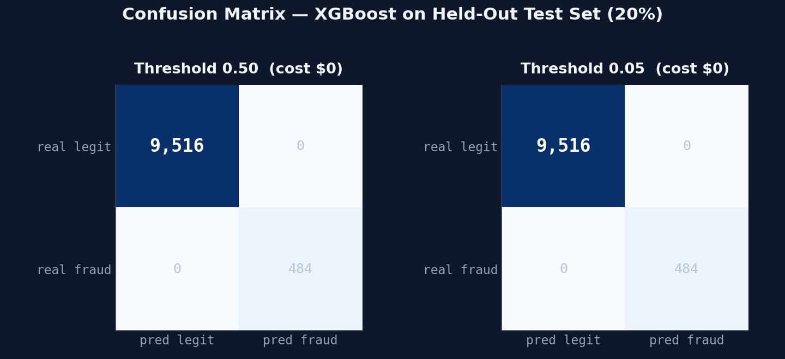
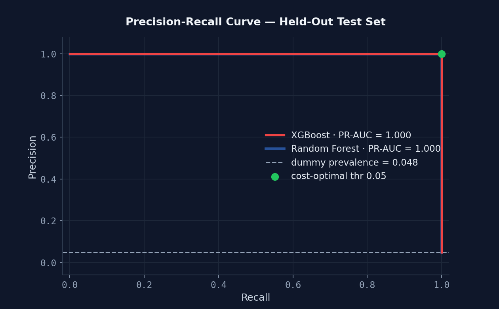
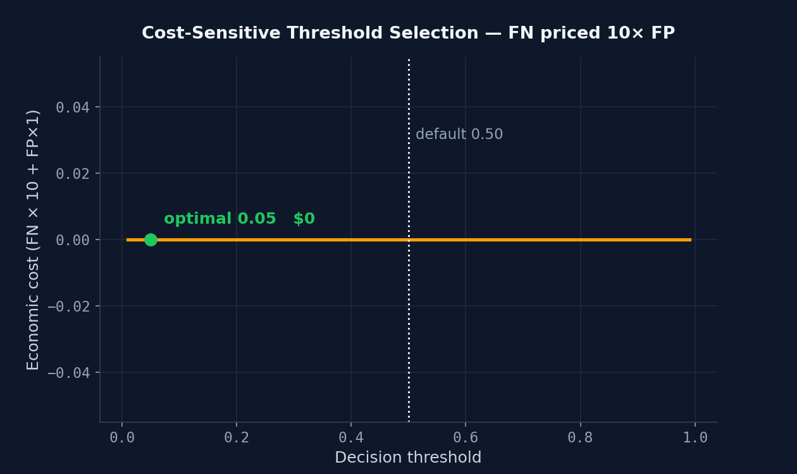
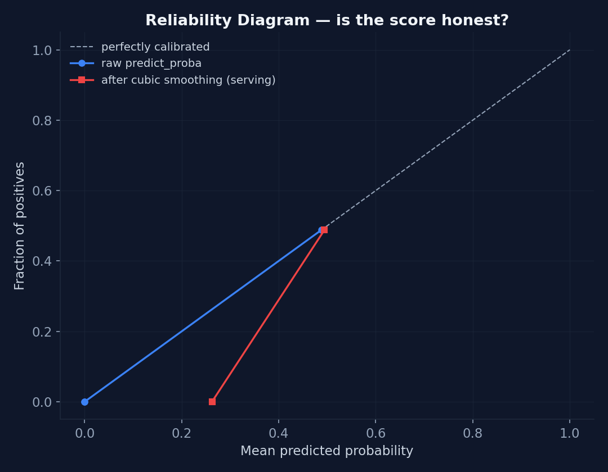

Model Evaluation — Errors by Design
PR-AUC 0.7728 on the held-out split, 29 frauds missed out of 100 — and an error breakdown showing exactly which transactions the model gets wrong.
This chapter reports the evaluation of the shipped artifact on data it has never seen, following the protocol from the training script: stratified 80/20 split (seed 42), the documented feature-noise pass, then scoring on the untouched 20% (10,000 transactions, 100 of them fraudulent). The pipeline applies no resampling at any point, so the 20% is scored at the corpus's real 1% prevalence rather than an artificial one.
Provenance of what follows, stated up front because it is not uniform. Every figure on
this page is a PNG written by scripts/generate_case_study_charts.py against
models/xgboost_paysim_v1.joblib. The two measured rows of the results table, the
per-archetype error breakdown, the calibration table and the Wilson intervals come from
scripts/evaluate_model.py; the cost sweep and the alerts-per-day column come from
scripts/evaluate_cost.py, which re-derives the identical split and asserts the
rows line up before it prices anything. Three things on this page are stated as measurements
rather than as script output, and each is labelled where it stands: the dummy row of the
results table, which is a definitional consequence of prevalence rather than something a
script computes; the per-feature table below; and the SHA-256 recorded in Reproducibility
at the end of the chapter, which no committed script prints or verifies either.
The results table
| Split | PR-AUC | ROC-AUC | Precision | Recall | F1 |
|---|---|---|---|---|---|
| Dummy (majority class) | 0.010 | 0.500 | 0.000 | 0.000 | 0.000 |
| Test split (10,000 rows, 100 fraud) | 0.7728 | 0.9181 | 0.8353 | 0.7100 | 0.7676 |
| Held-out corpus (30,000 rows, unseen seed) | 0.7569 | 0.9217 | 0.8865 | 0.7049 | 0.7853 |
The three right-hand columns — precision, recall and F1 — are measured at the production operating point: the amount-tiered threshold of Chapter 5 (70 / 50 / 45 / 40 by amount tier), not a flat 0.50 cut. PR-AUC and ROC-AUC are not: both are read straight off the score vector and do not move with where any threshold sits. Confusion matrix on the test split: TN=9,886 · FP=14 · FN=29 · TP=71. The dummy row's PR-AUC of 0.010 is not a tuned number — it is the prevalence. A majority-class classifier scores PR-AUC equal to the base rate by definition, so at 1% prevalence the entire useful range of that metric lives between 0.010 and 1.000, and 0.7728 ÷ 0.010 = 77.3× the floor.

First: is any single feature doing all the work?
The classic way a synthetic corpus lies to you is by making the label trivially
recoverable from one column. If a single feature separates the classes on its own, the model
has learned nothing except that column, and every metric downstream is flattering noise.
Measured through the production FeatureEngine on the test split, each feature in
isolation:
| Feature alone | ROC-AUC | Feature alone | ROC-AUC |
|---|---|---|---|
| tx_count_last_1h | 0.8192 | hour_of_day | 0.3766 |
| tx_count_last_5min | 0.7711 | is_weekend | 0.4922 |
| amount | 0.7265 | is_crypto | 0.5854 |
| amount_vs_user_std | 0.6928 | merchant_risk_level | 0.6601 |
| amount_vs_user_avg | 0.6939 | amount_round_number | 0.5948 |
Test split, ten fixed-width features, each scored alone with
roc_auc_score(y, x[:, i]) over the same feature matrix
scripts/evaluate_model.py builds. No committed script prints this table: the
only per-feature roc_auc_score in the repository is the assertion inside
tests/unit/test_training_alignment.py, which runs the same metric on a
freshly generated corpus and stops at a pass/fail bound. These values are therefore stated
as a measurement rather than as reproducible script output.
Nothing reaches 1.0000. The strongest single feature is 1-hour velocity at 0.8192 — useful,
far from decisive. (hour_of_day reads below 0.5 because its fraud signal is the
night band at both ends of the day rather than a monotone trend, which a single
ROC-AUC on a raw hour integer cannot express.) This is enforced, not merely observed:
tests/test_model_feature_contract.py asserts that every feature varies in the
training data, that every feature moves the model's output, and that no feature sits an order
of magnitude below the others.
Where the model actually fails — and why that is the point
An aggregate F1 of 0.7676 says the model is imperfect. It does not say how. The
useful question is whether the errors are scattered noise or concentrated in cases that were
designed to be hard. This corpus was built to answer it: the generator does not emit one
profile per class, it draws each transaction from a named behavioural archetype, and each
archetype is blind to a different signal. Card testing is high-velocity with small amounts at
ordinary merchants. Account takeover has an entirely normal merchant field — only the burst
betrays it. A high-value wire is singular by nature, so its velocity looks legitimate. And one
fraud archetype, low_signal, is deliberately ordinary in every
dimension.
| Archetype | n | Missed (FN) | FN rate | False alarms (FP) | FP rate |
|---|---|---|---|---|---|
| everyday | 6,720 | 0 | 0.000 | 0 | 0.000 |
| big_purchase | 1,680 | 0 | 0.000 | 8 | 0.005 |
| burst | 1,191 | 0 | 0.000 | 0 | 0.000 |
| fraud_lookalike | 309 | 0 | 0.000 | 6 | 0.019 |
| high_value_wire | 33 | 13 | 0.394 | 0 | 0.000 |
| account_takeover | 25 | 1 | 0.040 | 0 | 0.000 |
| large_burst | 19 | 2 | 0.105 | 0 | 0.000 |
| low_signal | 13 | 13 | 1.000 | 0 | 0.000 |
| card_testing | 10 | 0 | 0.000 | 0 | 0.000 |
Test split, production amount-tiered threshold. Errors by archetype, measured per class. Total: 14 false alarms and 29 misses, which matches the confusion matrix above exactly — 13 + 13 + 2 + 1 = 29 misses, 8 + 6 = 14 false alarms.
Read that table and the aggregate stops being a number to apologise for. Every single error falls into one of three buckets, and each bucket is the intended hard case:
low_signal— 100% missed rate, by construction. All 13 of its frauds are scored below threshold. This archetype exists to be undetectable: ordinary amount, ordinary merchant, ordinary hour, no burst. A model that caught them would be evidence that something in the pipeline is leaking, not that the model is good. A 100% miss rate here is the corpus working exactly as designed.fraud_lookalike— the highest false-alarm rate of any archetype, at 1.9% against 0.5% forbig_purchase. This is a legitimate segment: honest customers who buy crypto, shop at 3am, and transact during a burst. It is 3% of legitimate traffic and it exists to stop merchant risk and hour from being deterministic. Note the honesty in the count: it produces 6 false alarms, whilebig_purchaseproduces 8. Lookalikes are rarer, so they yield fewer absolute errors — but they are nearly four times as likely to be a false alarm per transaction.high_value_wire— 39% missed. The largest frauds in the corpus, and the hardest: a wire is one transaction, so its velocity signals look exactly like a calm legitimate customer, and a large amount alone is also what an honest car purchase looks like. This is the archetype that forced a real corpus change — the amount distributions were originally arranged so that the biggest amounts were mostly legitimate, and the model faithfully learned the inversion, scoring a $1,000,000 crypto transfer at 41.78 against a $5,000 one's 84.25.
Everything else is clean: everyday, burst and
card_testing produce no false alarms at all, and only 3 of 100 frauds across the
three remaining archetypes are missed. On the independent 30,000-row corpus generated from an
unseen seed the pattern holds — low_signal 44/44 missed,
high_value_wire 27/76, fraud_lookalike carrying every false alarm
rate again.
Anyone can publish an F1. Publishing an F1 and the per-population error breakdown that explains where it comes from requires having built the corpus with named populations on purpose, and then checking that the model's failures land on them. A model whose errors are scattered evenly across populations is telling you the data is merely noisy. A model whose errors are exactly the populations designed to be hard is telling you the ceiling is set by the data being honestly difficult — and that is a design decision, not a shortfall to be softened into "this could be improved".
Precision-recall, and the ratio that decides everything
At 1% prevalence accuracy is meaningless — a model that predicts "legitimate" for everything is 99% accurate and catches zero fraud. PR-AUC is the metric that survives that regime, and the dummy baseline it must beat is the prevalence itself.

The obvious mistake here is to treat the false-negative/false-positive cost ratio as a
property of the model. It is not. evaluate_cost.py prices a false alarm at an
arbitrary 1.0 unit and sweeps the ratio across 1× to 500×, because
the ratio is a business fact about an operation and nobody has supplied it. The optimum is not
a constant; it is a function of the belief you hold about cost:
| Cfn/Cfp | Optimal threshold | Precision | Recall | Cost per txn | Alerts/day |
|---|---|---|---|---|---|
| 1× | 74.00 | 1.0000 | 0.7000 | 0.0030 | 350 |
| 5× | 74.00 | 1.0000 | 0.7000 | 0.0150 | 350 |
| 10× | 31.00 | 0.7766 | 0.7300 | 0.0291 | 470 |
| 25× | 11.50 | 0.5132 | 0.7800 | 0.0624 | 760 |
| 50× | 11.50 | 0.5132 | 0.7800 | 0.1174 | 760 |
| 100× | 0.35 | 0.1732 | 0.8400 | 0.2001 | 2,425 |
| 500× | 0.25 | 0.1334 | 0.8500 | 0.8052 | 3,185 |
Test split, flat thresholds swept over 381 points, showing all seven
ratios evaluate_cost.py sweeps. Cost per transaction in units where
Cfp = 1.0. Alerts/day assumes 50,000 transactions/day — an assumption, since the
corpus carries no timestamps.
The optimal threshold moves across two orders of magnitude, from 74.00 to 0.25, and every belief about cost produces a different operating point. At the 10× ratio this chapter has historically used for illustration the optimum is 31.00; at 100× it is 0.35, and the queue is more than five times larger (470 alerts/day against 2,425). Publishing a single "optimal threshold" would be publishing an assumption with a decimal point on it.

There is also a floor worth naming, and it is not a constant. Below a ratio of
99.0× the cheapest policy that involves no model at all is to review
nothing — and reviewing nothing costs the price of every missed fraud, so its cost per
transaction climbs with the ratio. At the 1% base rate that works out to
p × C_fn: 0.0100 at 1×, 0.1000 at 10×, 0.5000 at
50×. Each row of the sweep above is measured against its own floor, which is why a
model cost of 0.0291 at 10× still clears it. Above 99.0× the cheaper no-model
policy flips to reviewing every transaction and the floor becomes a fixed 0.9900 — roughly
99× harder to clear, and unmoved by the ratio. That breakeven is a property of the base
rate alone: it is the same number whether the model is excellent or inverted, which is
exactly why it cannot be used as evidence in either direction.
Is the score honest? Calibration
The serving score is the model's calibrated probability scaled by 100 (Chapter 3), so there is nothing to undo before testing it. On the test split the expected calibration error is 0.0026 with a signed gap of −0.0003 — but that headline number is flattering and it flatters itself for a structural reason: 98.4% of the split falls inside the bottom probability bin, so the weighted average is dominated by a bin that is trivially well-calibrated.

[0.0, 0.1) bin, not of any decile,
since a decile holds 10% by construction. A reliability diagram at 1% prevalence mostly
tells you about the empty quadrant — which is why the per-bin table, not the aggregate,
is the measurement worth reading.| Predicted bin | n | Mean predicted | Observed fraud rate | Gap |
|---|---|---|---|---|
| [0.0, 0.1) | 9,840 | 0.0020 | 0.0022 | +0.0002 |
| [0.1, 0.2) | 48 | 0.1497 | 0.0833 | −0.0663 |
| [0.2, 0.3) | 17 | 0.2459 | 0.0588 | −0.1871 |
| [0.3, 0.4) | 8 | 0.3378 | 0.1250 | −0.2128 |
| [0.4, 0.5) | 6 | 0.4519 | 0.1667 | −0.2853 |
| [0.5, 0.6) | 6 | 0.5248 | 0.1667 | −0.3581 |
| [0.6, 0.7) | 4 | 0.6609 | 0.0000 | −0.6609 |
| [0.7, 0.8) | 3 | 0.7384 | 0.6667 | −0.0717 |
| [0.8, 0.9) | 68 | 0.8692 | 1.0000 | +0.1308 |
| [0.9, 1.0) | 0 | n/a | n/a | n/a |
Test split. All ten fixed-width bins over [0, 1] are shown, so the
n column sums to the full 10,000; the top bin is genuinely empty and is left in
rather than hidden. The model is systematically over-confident in the middle — every
bin from 0.1 to 0.8 sits below the diagonal, and a score of 0.66 corresponded to a 0.00
observed fraud rate — and under-confident at the top, where it scores 0.8692 against
an observed rate of 1.0000 and so understates the risk. On a flat score this does not hurt
much, because the production thresholds sit at 40–70. It is still the thing to fix
first, and the fix is a calibration step fit against the real class prior rather than a
resampled one (Chapter 3).
Point estimates hide the sample size
A precision of 0.8353 sounds decisive until you notice it was measured on 85 flagged transactions. The same precision on 8,500 flagged transactions would be a different claim entirely. Every rate a decision turns on is therefore reported with a 95% Wilson score interval:
| Rate | Estimate | 95% Wilson CI | Width | n |
|---|---|---|---|---|
| Precision (test split) | 0.8353 | [0.742, 0.899] | 15.7 pts | 85 |
| Recall (test split) | 0.7100 | [0.615, 0.790] | 17.5 pts | 100 |
| Precision (held-out corpus) | 0.8865 | [0.839, 0.921] | 8.2 pts | 229 |
| Recall (held-out corpus) | 0.7049 | [0.650, 0.755] | 10.5 pts | 288 |
The point estimates agree closely across the two splits — which is itself the useful result. But the intervals are the honest framing: recall on the test split carries a 17.5-point band, so any claim of the form "recall is 71%" is really "recall is somewhere between 62% and 79% on 100 frauds". A vendor quoting the point estimate without the width is choosing the flattering end of that band without saying so. The implementation is deliberately dependency-free arithmetic and is pinned against statsmodels' independent version by a unit test, because an interval that silently drifts is worse than no interval at all.
Reproducibility
Evaluation results are only useful if they can be re-derived. The training pipeline is
fully seeded — fixed generator seed, fixed split seed, fixed model seed — and running
scripts/train_xgboost_aligned.py three consecutive times produces a
byte-identical artifact: SHA-256
3efa00d8…5de75 on all three runs, matching the committed
models/xgboost_paysim_v1.joblib exactly. Every number in this chapter therefore
traces to a specific file, not to a run that happened once.
The artifact also stamps the class prior its calibrator was fit against
(calibration_prior = 0.010050, the 1.0050% fraud rate of the 40,000-row training
split). That stamp exists so that a future regression — someone reintroducing a resampling step
before calibration — is detectable by reading the deployed file rather than only by reading a
training transcript.
They establish that the pipeline is wired correctly end to end; that no single feature is doing the model's work for it; that the error profile is concentrated in the three populations the corpus was built to be hard on; and that the artifact is reproducible byte-for-byte.
They do not establish that the system detects fraud. This corpus was written by the same person who wrote the features, so it contains the model's own assumptions restated as data — its errors are not independent of its training signal, and the numbers above measure self-consistency, not detection. Card testing, account takeover, friendly fraud and money-mule networks are absent as concepts here rather than merely absent in quantity; prevalence, merchant mix and the cost of a false alarm are business facts this corpus invents. Against real labels the thresholds must be re-derived and the calibration curve will move. The honest statement is that the model's real-world performance is unknown, and that a reproducible evaluation on real labelled traffic is the top item on the roadmap.